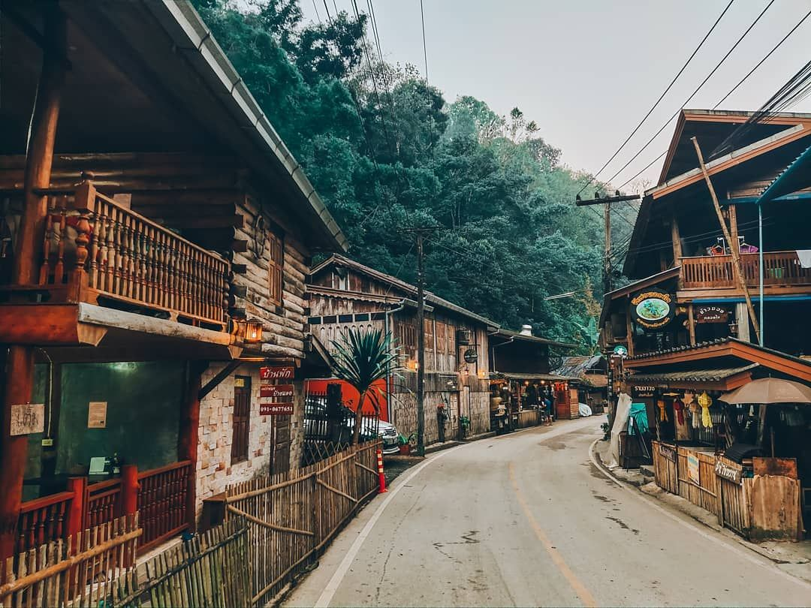
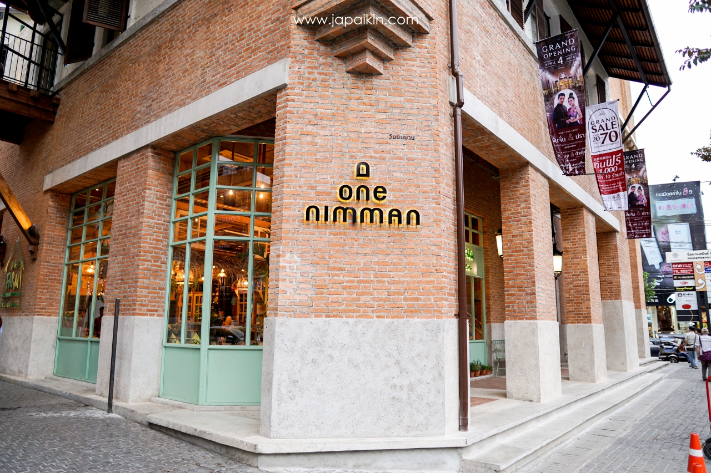

ดอยแม่กำปอง
หมู่บ้านในหุบเขาและผืนป่าอันอุดมสมบูรณ์ เหมาะสำหรับการมาพักผ่อนหย่อนใจ จิบกาแฟดริปท่ามกลางสายหมอกยามเช้า
เรียนรู้เพิ่มเติม
ถนนนิมมานเหมินท์
ย่านสุดฮิตใจกลางเมืองเชียงใหม่ ผสมผสานความเป็นเมืองสมัยใหม่กับงานคราฟต์ เต็มไปด้วยคาเฟ่ดีไซน์เก๋และแกลเลอรี
เรียนรู้เพิ่มเติมวัดพระธาตุดอยสุเทพ
สถานที่ศักดิ์สิทธิ์คู่บ้านคู่เมืองเชียงใหม่ บนยอดดอยสุเทพ ประดิษฐานพระบรมสารีริกธาตุเจดีย์สีทองอร่าม
เรียนรู้เพิ่มเติม